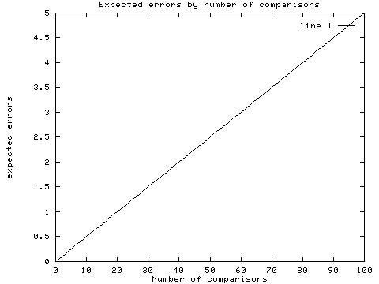

CS595
Machine Learning and Social Media
Lecture 2: Reading Research
Aron Culotta
Assistant Professor
Computer Science
Illinois Institute of Technology
- Fong: "Reading a computer science research paper"
- Keshav: "How to read a paper"
- Barnes: "How to read a research paper"
Fong
- Comprehension: What did they do?
- Evaluation: Are the results significant? Valid?
- Synthesis: How would you do it differently? What should be done next?
Matches nicely to Keshav's Three-Pass Approach.
Pass 1: Comprehension
- What is the problem?
- How is it solved?
- How do we know that it was solved?
- What can we do now that we couldn't before?
Pass 2: Evaluation
- Is the problem significant?
- Are contributions significant?
- Are the claims valid?
- Do the figures and tables make sense?
- Are the assumptions reasonable?
- What are the limitations of the approach?
Pass 3: Synthesis
- Virtually reimplement
- How could experiments be improved?
- What other experiments could/should be run?
- How else could you apply this?
- What are unsolved problems?
- What are implicit assumptions?
- What are missing citations?
Highlights
- "Learn to be fair." Don't be superficially critical.
- Read up to the introduction, then ask yourself: "How would I solve this?"
- Pick points of disagreement.
- Phrases like "I would have liked to seen..." are not helpful
Discussion Questions
- Barnes: "You need not read a research paper sequentially from beginning to end."
Discussion Questions
- How long should it take to read an 8-page paper?
Discussion Questions
- How do you read research papers?
Sample Peer Review Form
SIGNIFICANCE:
- Is the work reported important?
- Does it advance the state of the art?
- Does the paper stimulate discussion of important issues or alternative points of view?
Sample Peer Review Form
TECHNICAL QUALITY:
- Is the paper technically sound?
- Does it carefully evaluate the strengths and limitations of its contributions?
- Are its claims backed up?
- Does the paper offer a new form of evidence in support of or against a well-known technique?
- Does the paper back up a theoretical idea already in the literature with experimental evidence?
- Does it offer a theoretical analysis of prior experimental results?
Sample Peer Review Form
PRESENTATION:
- Is the paper clearly written?
- Does it motivate the research?
- Does it describe the inputs, outputs, and basic algorithms employed?
- Are the results described and evaluated?
- Is the paper organized in a logical fashion?
- Is the paper written in a manner that makes its content accessible to most researchers in the field?
Interpreting results
Three kinds of lies...
Averages hide information
- one foot in ice, the other in boiling water


Statistical significance
statistically significant $\ne$ important
- Eating apples extends life by a statistically significant two days
Multiple Comparisons


Over-generalization
- It worked for my data, so it will work for yours, too.
Doing a Literature Review
- The easy way: Find a survey paper!
- google: "sentiment classification" survey
- Discovering synonyms / jargon
- Once you have a few key papers:
- Find backward / forward links
- Categorize
- Find top people and conferences
Tools
- Google Scholar
- Zotero
- BibTeX
- CiteULike